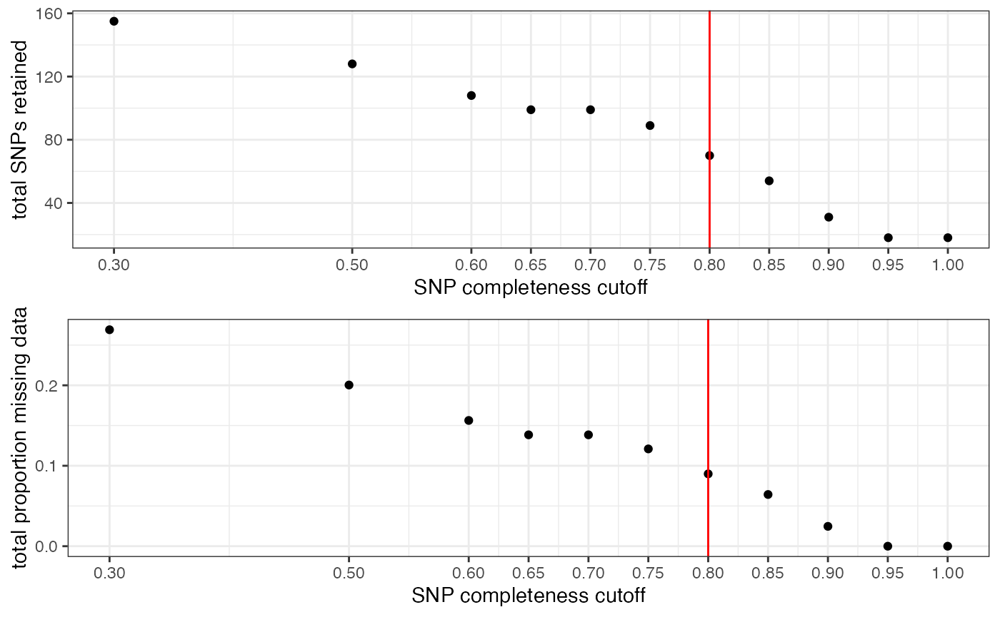

reproducible-vignette.Rmd
library(SNPfiltR)
library(vcfR)
#>
#> ***** *** vcfR *** *****
#> This is vcfR 1.12.0
#> browseVignettes('vcfR') # Documentation
#> citation('vcfR') # Citation
#> ***** ***** ***** *****
#load the example vcfR object
data(vcfR.example)
### check the metadata present in your vcf
vcfR.example
#> ***** Object of Class vcfR *****
#> 20 samples
#> 1 CHROMs
#> 500 variants
#> Object size: 0.7 Mb
#> 38.07 percent missing data
#> ***** ***** *****
vcfR.example@fix[1:10,1:8]
#> CHROM POS ID REF ALT QUAL FILTER
#> [1,] "Pseudochr1" "25801497" "16579:67:+" "A" "G" NA "PASS"
#> [2,] "Pseudochr1" "25457396" "16292:5:-" "A" "G" NA "PASS"
#> [3,] "Pseudochr1" "20817192" "12868:12:-" "C" "T" NA "PASS"
#> [4,] "Pseudochr1" "29813636" "19560:94:+" "T" "C" NA "PASS"
#> [5,] "Pseudochr1" "28229092" "18530:62:-" "A" "G" NA "PASS"
#> [6,] "Pseudochr1" "9354478" "4669:39:+" "C" "T" NA "PASS"
#> [7,] "Pseudochr1" "17764465" "10787:26:+" "C" "T" NA "PASS"
#> [8,] "Pseudochr1" "5349729" "1884:88:-" "A" "T" NA "PASS"
#> [9,] "Pseudochr1" "17438085" "10478:65:-" "T" "G" NA "PASS"
#> [10,] "Pseudochr1" "30854925" "20439:79:+" "G" "T" NA "PASS"
#> INFO
#> [1,] "NS=93;AF=0.059"
#> [2,] "NS=54;AF=0.056"
#> [3,] "NS=109;AF=0.037"
#> [4,] "NS=63;AF=0.016"
#> [5,] "NS=97;AF=0.433"
#> [6,] "NS=17;AF=0.059"
#> [7,] "NS=103;AF=0.330"
#> [8,] "NS=9;AF=0.111"
#> [9,] "NS=16;AF=0.469"
#> [10,] "NS=102;AF=0.010"
vcfR.example@gt[1:10,1:2]
#> FORMAT A_californica_333849
#> [1,] "GT:DP:AD:GQ:GL" "0/0:44:44,0:40:-0.00,-14.55,-152.08"
#> [2,] "GT:DP:AD:GQ:GL" NA
#> [3,] "GT:DP:AD:GQ:GL" "0/0:347:347,0:40:-0.00,-105.46,-1205.89"
#> [4,] "GT:DP:AD:GQ:GL" "1/1:3:0,3:16:-9.57,-1.17,-0.03"
#> [5,] "GT:DP:AD:GQ:GL" "0/1:67:33,34:40:-78.52,0.00,-75.77"
#> [6,] "GT:DP:AD:GQ:GL" NA
#> [7,] "GT:DP:AD:GQ:GL" "0/0:331:331,0:40:0.00,-99.80,-1063.41"
#> [8,] "GT:DP:AD:GQ:GL" NA
#> [9,] "GT:DP:AD:GQ:GL" NA
#> [10,] "GT:DP:AD:GQ:GL" "0/0:35:35,0:40:-0.00,-12.08,-112.81"
#Load the example popmap file. It is a standard two column popmap, where the first column must be named 'id' and contain individual sample identifiers matching the sample identifiers in the vcf file, and the second column must be named 'pop', and contain a population assignment for each sample.
data(popmap)
popmap
#> id pop
#> 1 A_californica_333849 californica
#> 2 A_californica_333854 californica
#> 3 A_californica_333855 californica
#> 4 A_californica_333857 californica
#> 5 A_californica_333860 californica
#> 6 A_insularis_334031 insularis
#> 7 A_insularis_334032 insularis
#> 8 A_insularis_334033 insularis
#> 9 A_insularis_334034 insularis
#> 10 A_insularis_334037 insularis
#> 11 A_woodhouseii_334133 woodhouseii
#> 12 A_woodhouseii_334134 woodhouseii
#> 13 A_woodhouseii_334142 woodhouseii
#> 14 A_woodhouseii_334148 woodhouseii
#> 15 A_woodhouseii_334153 woodhouseii
#> 16 A_coerulescens_396256 coerulescens
#> 17 A_coerulescens_396259 coerulescens
#> 18 A_coerulescens_396262 coerulescens
#> 19 A_coerulescens_396263 coerulescens
#> 20 A_coerulescens_396264 coerulescens
#generate exploratory visualizations of depth and genotype quality for all called genotypes
#hard_filter(vcfR=vcfR.example)
#hard filter to minimum depth of 5, and minimum genotype quality of 30
vcfR<-hard_filter(vcfR=vcfR.example, depth = 5, gq = 30)
#> 28.81% of genotypes fall below a read depth of 5 and were converted to NA
#> 3.81% of genotypes fall below a genotype quality of 30 and were converted to NA
#execute allele balance filter
vcfR<-filter_allele_balance(vcfR)
#> 7.54% of het genotypes (0.71% of all genotypes) fall outside of .25 - .75 allele balance and were converted to NA
#visualize and pick appropriate max depth cutoff
#max_depth(vcfR)
#not running here to save space on visualizations
#filter vcf by the max depth cutoff you chose
vcfR<-max_depth(vcfR, maxdepth = 100)
#> maxdepth cutoff is specified, filtered vcfR object will be returned
#> 17.6% of SNPs were above a mean depth of 100 and were removed from the vcf
#check vcfR to see how many SNPs we have left
vcfR
#> ***** Object of Class vcfR *****
#> 20 samples
#> 2 CHROMs
#> 412 variants
#> Object size: 0.4 Mb
#> 67.65 percent missing data
#> ***** ***** *****
#run function to visualize samples and return informative data.frame object
miss<-missing_by_sample(vcfR=vcfR)
#> No popmap provided
#run function to drop samples above the threshold we want from the vcf
#here I am setting a relatively lax cutoff
vcfR<-missing_by_sample(vcfR=vcfR, cutoff = .9)
#> 3 samples are above a 0.9 missing data cutoff, and were removed from VCF
#remove invariant sites generated by sample trimming and genotype filtering
vcfR<-min_mac(vcfR, min.mac = 1)
#> 51.94% of SNPs fell below a minor allele count of 1 and were removed from the VCF
#update popmap by removing samples that have been filtered out
popmap<-popmap[popmap$id %in% colnames(vcfR@gt)[-1],]
#visualize missing data by SNP and the effect of various cutoffs on the missingness of each sample
missing_by_snp(vcfR)
#> cutoff is not specified, exploratory visualizations will be generated
#> Picking joint bandwidth of 0.128#> filt missingness snps.retained
#> 1 0.30 0.26907021 155
#> 2 0.50 0.20036765 128
#> 3 0.60 0.15631808 108
#> 4 0.65 0.13844326 99
#> 5 0.70 0.13844326 99
#> 6 0.75 0.12095175 89
#> 7 0.80 0.08991597 70
#> 8 0.85 0.06427015 54
#> 9 0.90 0.02466793 31
#> 10 0.95 0.00000000 18
#> 11 1.00 0.00000000 18#we can check whether this excess missing data in some samples is affecting overall clustering patterns
#assess missing data effects on clustering
assess_missing_data_pca(vcfR = vcfR, popmap = popmap, thresholds = c(.8), clustering = FALSE)
#> cutoff is specified, filtered vcfR object will be returned
#> 64.65% of SNPs fell below a completeness cutoff of 0.8 and were removed from the VCF
#> Loading required namespace: adegenet
#> Registered S3 method overwritten by 'spdep':
#> method from
#> plot.mst ape
#> [[1]]
#> PC1 PC2 PC3 PC4
#> A_californica_333849 -0.5969622 -0.5362690 -0.595508158 0.73945078
#> A_californica_333854 -0.4693982 -0.9890245 -1.414869592 -1.37005171
#> A_californica_333855 0.5581980 -0.1075819 -0.257991833 0.14855832
#> A_californica_333857 -1.0182608 -0.5641853 -0.417897234 -0.28592615
#> A_californica_333860 -0.5224670 -0.7392822 -0.823298194 -0.01861634
#> A_insularis_334031 1.6356477 0.3136035 0.074824184 -0.03538247
#> A_insularis_334032 1.6717696 0.3245417 0.079829224 -0.03590089
#> A_insularis_334033 1.6695981 0.3219187 0.075663814 -0.03325062
#> A_insularis_334034 1.6356477 0.3136035 0.074824184 -0.03538247
#> A_insularis_334037 1.6356477 0.3136035 0.074824184 -0.03538247
#> A_woodhouseii_334133 -0.5830285 -0.1164268 -0.007498313 0.86818251
#> A_woodhouseii_334134 -0.4918528 -0.6028390 0.150783442 0.31303844
#> A_woodhouseii_334142 -0.8005397 -1.0392687 0.531437285 1.20318761
#> A_woodhouseii_334153 -0.6375918 -1.3648416 2.046665190 -1.05594446
#> A_coerulescens_396256 -1.1495480 1.3483650 0.060491990 0.14644120
#> A_coerulescens_396263 -0.8159388 0.6141574 0.121397651 -0.06714767
#> A_coerulescens_396264 -1.7209210 2.5099257 0.226322176 -0.44587363
#> PC5 PC6 pop missing
#> A_californica_333849 1.34940006 -0.217111195 californica 0.2272727
#> A_californica_333854 -0.31732671 -0.252236192 californica 0.4343434
#> A_californica_333855 0.79002290 -0.411529451 californica 0.4545455
#> A_californica_333857 -0.27279109 -0.675313989 californica 0.1818182
#> A_californica_333860 -0.29414891 1.230546314 californica 0.4343434
#> A_insularis_334031 -0.11699427 0.010904247 insularis 0.2929293
#> A_insularis_334032 -0.12438335 0.006458987 insularis 0.1919192
#> A_insularis_334033 -0.11649650 -0.001424441 insularis 0.1818182
#> A_insularis_334034 -0.11699427 0.010904247 insularis 0.3535354
#> A_insularis_334037 -0.11699427 0.010904247 insularis 0.3383838
#> A_woodhouseii_334133 0.22400118 0.462404897 woodhouseii 0.3181818
#> A_woodhouseii_334134 -0.05571374 0.543962142 woodhouseii 0.7727273
#> A_woodhouseii_334142 -1.18389174 -0.521504387 woodhouseii 0.3686869
#> A_woodhouseii_334153 0.44668940 0.174951057 woodhouseii 0.4898990
#> A_coerulescens_396256 0.01905756 0.014972030 coerulescens 0.6111111
#> A_coerulescens_396263 0.03051154 -0.599271664 coerulescens 0.7424242
#> A_coerulescens_396264 -0.14394778 0.212383154 coerulescens 0.2070707
#show me the samples with the most missing data at an 80% completeness threshold
filt<-miss[miss$filt == .8,]
filt[order(filt$snps.retained),]
#> indiv filt snps.retained
#> 78 A_coerulescens_396262 0.8 0
#> 77 A_coerulescens_396259 0.8 6
#> 74 A_woodhouseii_334148 0.8 19
#> 79 A_coerulescens_396263 0.8 20
#> 72 A_woodhouseii_334134 0.8 26
#> 61 A_californica_333849 0.8 28
#> 62 A_californica_333854 0.8 29
#> 63 A_californica_333855 0.8 29
#> 64 A_californica_333857 0.8 29
#> 65 A_californica_333860 0.8 29
#> 66 A_insularis_334031 0.8 29
#> 67 A_insularis_334032 0.8 29
#> 68 A_insularis_334033 0.8 29
#> 69 A_insularis_334034 0.8 29
#> 70 A_insularis_334037 0.8 29
#> 71 A_woodhouseii_334133 0.8 29
#> 73 A_woodhouseii_334142 0.8 29
#> 75 A_woodhouseii_334153 0.8 29
#> 76 A_coerulescens_396256 0.8 29
#> 80 A_coerulescens_396264 0.8 29
#drop the three samples with an excess of missing data at an 80% SNP completeness threshold
vcfR<- vcfR[,colnames(vcfR@gt) != "A_coerulescens_396263" & colnames(vcfR@gt) != "A_woodhouseii_334134" & colnames(vcfR@gt) != "A_coerulescens_396256"]
#remove invariant SNPs
vcfR<-min_mac(vcfR, min.mac = 1)
#> 3.54% of SNPs fell below a minor allele count of 1 and were removed from the VCF
vcfR
#> ***** Object of Class vcfR *****
#> 14 samples
#> 1 CHROMs
#> 191 variants
#> Object size: 0.2 Mb
#> 31.71 percent missing data
#> ***** ***** *****
#update popmap by removing samples that have been filtered out
popmap<-popmap[popmap$id %in% colnames(vcfR@gt)[-1],]
missing_by_snp(vcfR)
#> cutoff is not specified, exploratory visualizations will be generated
#> Picking joint bandwidth of 0.124#> filt missingness snps.retained
#> 1 0.30 0.20506912 155
#> 2 0.50 0.15631470 138
#> 3 0.60 0.10593220 118
#> 4 0.65 0.08010681 107
#> 5 0.70 0.08010681 107
#> 6 0.75 0.05654762 96
#> 7 0.80 0.04414125 89
#> 8 0.85 0.04414125 89
#> 9 0.90 0.02250489 73
#> 10 0.95 0.00000000 50
#> 11 1.00 0.00000000 50
#all samples look good at most thresholds, because of the small size of this dataset, I will choose a 60% completeness threshold in order to retain as many SNPs as possible
#filter vcfR
vcfR<-missing_by_snp(vcfR, cutoff = .6)
#> cutoff is specified, filtered vcfR object will be returned
#> 38.22% of SNPs fell below a completeness cutoff of 0.6 and were removed from the VCF
#look at final stats for our filtered vcf file
vcfR
#> ***** Object of Class vcfR *****
#> 14 samples
#> 1 CHROMs
#> 118 variants
#> Object size: 0.2 Mb
#> 10.59 percent missing data
#> ***** ***** *****